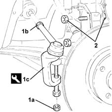
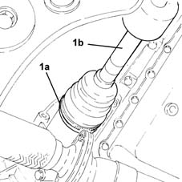
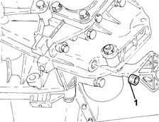
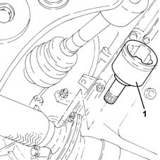
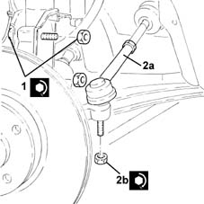
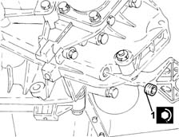

2110D76 Differential right INNER DRIVESHAFT - R.R.
- Path
- Procedures > 21 GEARBOX > 2110 MANUAL GEARBOX AND DIFFERENTIAL > 2110D manual gearbox differential > 2110D76 Differential right INNER DRIVESHAFT - R.R.
- Kind
- repair procedure (removal / refitting; the operation number is the code)
- Applies to
- engines: 1.2 8v, 1.2 16v, 1.4 16v; all production periods
- Interactive page
- https://sloeber94.github.io/elrnDB-lYpsln/en/#/2429119
Applies to: engines: 1.2 8v, 1.2 16v, 1.4 16v; all production periods
 Removing
Removing
 Refitting
RefittingPosition the vehicle on the ramp.
Proceed with removal 4450B04 right front wheel r r .
1. Undo the nut (1a) and disconnect the steering rod (1b) from the right front hub steering knuckle using the tool (1c).
 | Name | Country |
|---|---|---|
1c | Extractor | 1.871.000.700 |
2. Undo the bolts fixing the right front hub steering knuckle to the front shock absorber.

Applies to: engines: 1.2 8v, 1.2 16v, 1.4 16v; all production periods
1. Loosen the band (1a) and disconnect the right driveshaft (1b).

Applies to: engines: 1.2 8v, 1.2 16v, 1.4 16v; all production periods
1. Undo the plug and drain the manual gearbox and differential.

Applies to: engines: 1.2 8v, 1.2 16v, 1.4 16v; all production periods
1. Remove the right differential internal driveshaft using a special lever.

Applies to: engines: 1.2 8v, 1.2 16v, 1.4 16v; all production periods
Refitting
RemovingPlace the right differential internal driveshaft in its housing.
Connect the right driveshaft and tighten the band.
1. Tighten the bolts fixing the right front hub steering knuckle to the front shock absorber to the recommended torque.
 | Fastening | Component | Ø | Value (daNm) |
|---|---|---|---|---|
1 | Bolt | FRONT HUB STEERING KNUCKLE. | M10 | (Shock absorber side) 6.2 ÷ 6.8 |
2. Connect the steering rod (2a) to the right front steering knuckle and tighten the nut (2b) to the recommended torque.
| Fastening | Component | Ø | Value (daNm) |
|---|---|---|---|---|
2b | Nut | ADJUSTABLE STEERING LINKS | M10 | (Steering knuckle side) 3.6 ÷ 4.4 |

Applies to: engines: 1.2 8v, 1.2 16v, 1.4 16v; all production periods
Proceed with refitting 4450B04 right front wheel r r .
1. Tighten the manual gearbox and differential fluid drain plug to the recommended torque.
| Fastening | Component | Ø | Value (daNm) |
|---|---|---|---|---|
1 | Drain plug | GEAR CASING PADS | M16 | (Differential side) 1.6 ÷ 2.0 |

Applies to: engines: 1.2 8v, 1.2 16v, 1.4 16v; all production periods
Refill the manual gearbox and differential 0010T41 MANUAL GEARBOX OIL - Check level and top up, if necessary .
Remove the car from the ramps.